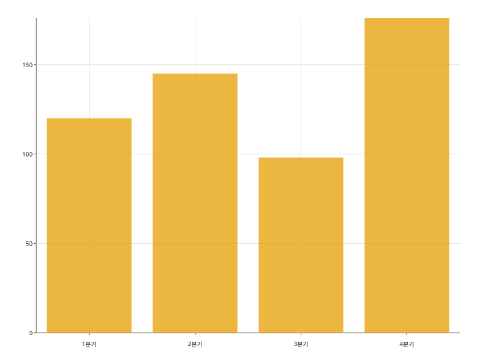
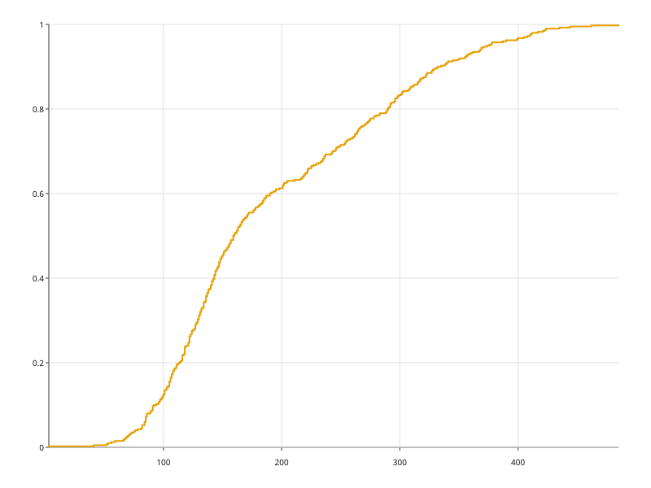
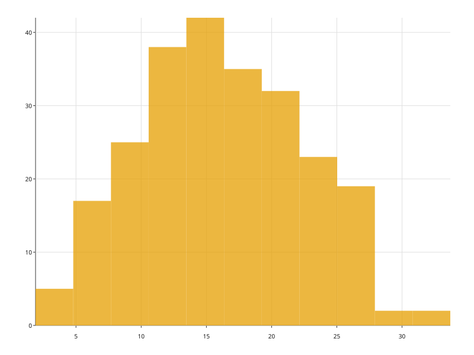
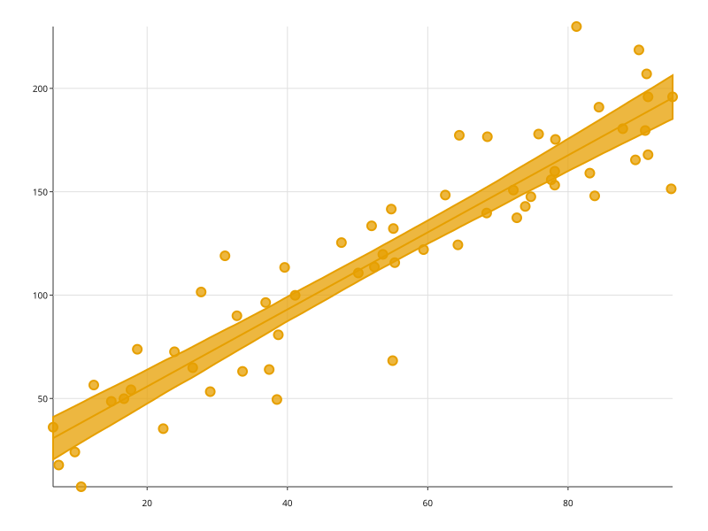
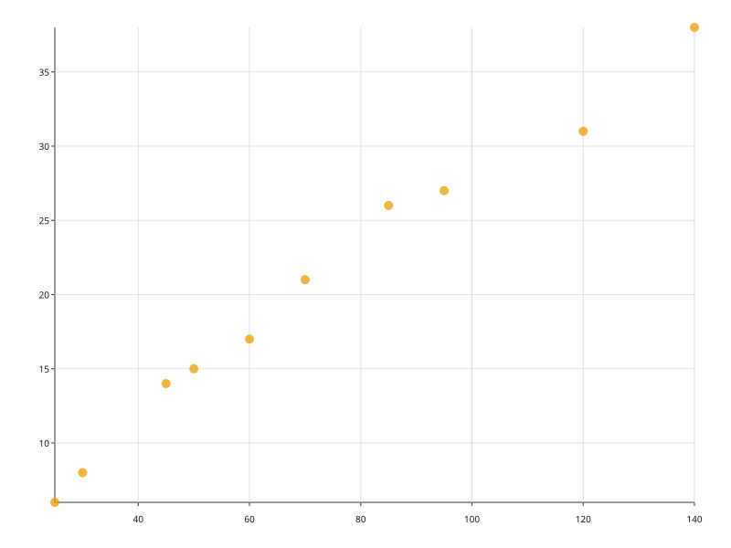

예시 11종. 각 그림 아래에 그것을 그린 코드가 함께 있다.

barplot 카테고리마다 막대 하나를 그린다. orient= 로 방향을, hue= 와 stacked= 로 그룹을 정한다.
ecdfplot 값을 정렬해 "이 값 이하가 전체의 몇 퍼센트인가"를 계단으로 그린다. 구간도 대역폭도 고르지 않는다.
histplot 수치 한 컬럼을 구간으로 나눠 각 구간에 든 행 수를 막대로 그린다.
regplot 산점도 위에 최소제곱 적합선을 얹고, 부트스트랩으로 잡은 신뢰대역을 함께 그린다.
scatterplot x·y 두 수치 컬럼을 점으로 놓는다. hue= 는 색, size= 는 마커 크기에 매핑한다.